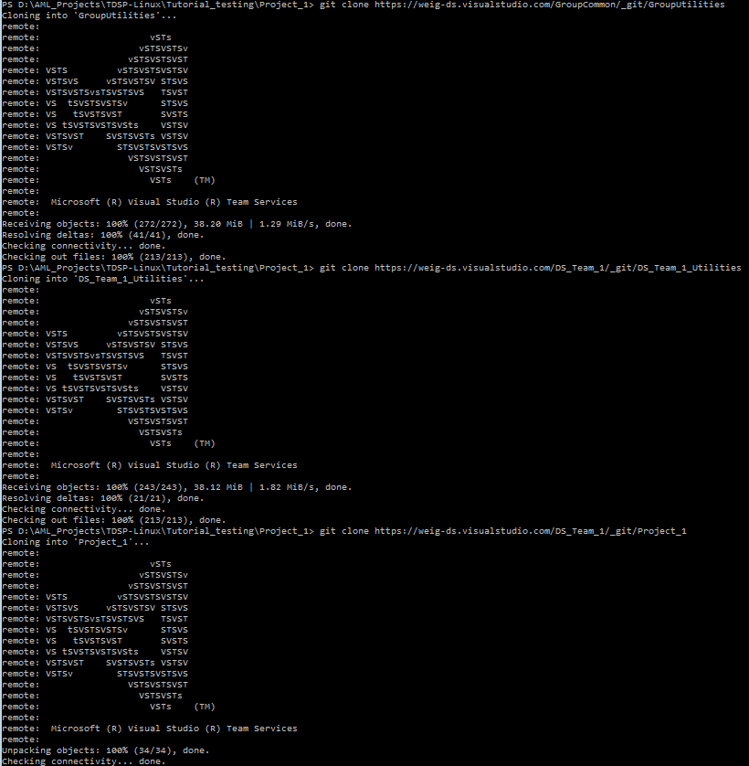
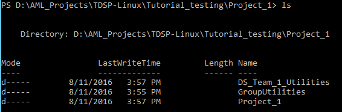
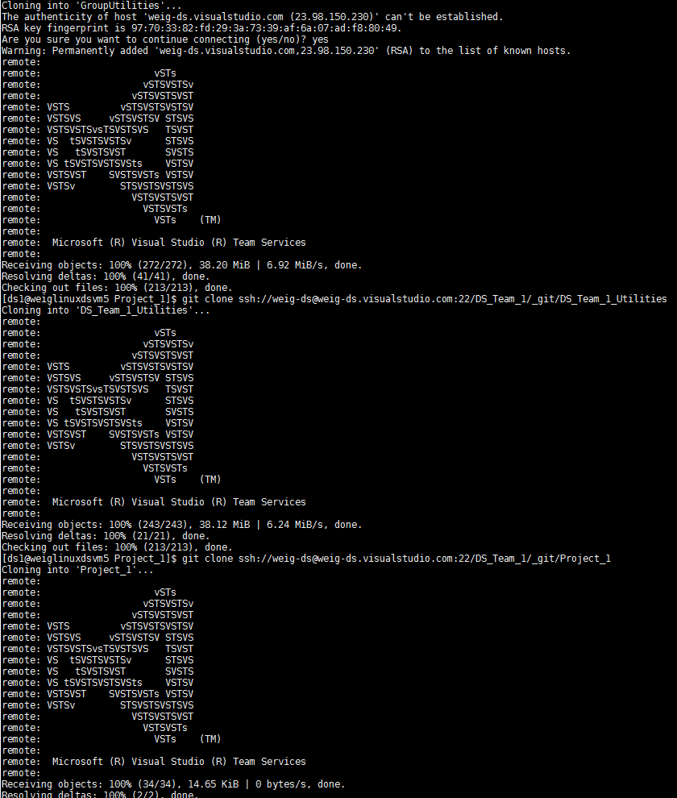
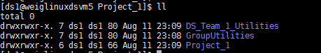

After following this tutorial, individual contributors of data science projects will complete the following tasks:
GroupUtilities is the repository that your group is maintaining to share useful utilities across the entire group. TeamUtilities is the repository that your team is maintaining specifically for your team.
Dictionary of names used in this instruction.
R2: The GroupUtilities repository on Git you are going to set up on your group's VSTS server.R4: The TeamUtilities repository on Git you are going to setup on your group's VSTS server.R5: The Project repository on Git you are going to clone from your group's VSTS server.D2, D4, and D5: The local directories on your machine that you clone R2, R4, and R5 to, respectively.If any of these two privileges has not been completed, please reach out to your team lead, your project lead, or their delegates to set it up by following the instructions for team lead, or for project lead.
On your local machine, create a directory C:\GitRepos (Windows), or $home/GitRepos (Linux), and change to that directory. Then, run the following commands to clone your GroupUtilities, TeamUtilities, and Project project repositories to your local machine.
Windows
git clone <the HTTPS URL of the GroupUtilities repository>
git clone <the HTTPS URL of the TeamUtilities repository>
git clone <the HTTPS URL of the Project repository>

You will see the three folders under your project directory.

Linux
git clone <the SSH URL of the GroupUtilities repository>
git clone <the SSH URL of the TeamUtilities repository>
git clone <the SSH URL of the Project repository>

You will see the three folders under your project directory.

To mount Azure file shares to your DSVM, please follow the instructions in Section 5 of the Team Lead Instructions.